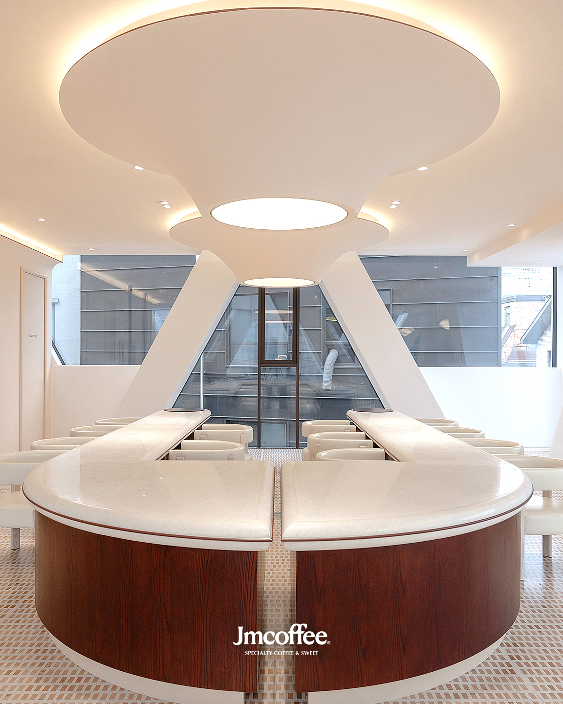

<!DOCTYPE html>
<html lang="ko">
<head>
<meta charset="UTF-8">
<meta name="viewport" content="width=device-width, initial-scale=1.0">
<title>인스타그램 미리보긴</title>
<link rel="stylesheet" href="https://cdn.jsdelivr.net/npm/swiper@10/swiper-bundle.min.css"/>
<style>
    #insta { padding:50px 0; }
    .inner { width:1080px; max-width:1080px; margin:0 auto;   }
    .thumb-grid {
        display: grid;
        grid-template-columns: repeat(auto-fill, minmax(310px, 1fr));
        gap: 4px;
        margin-bottom:4px; 
    }
    .thumb-box {
        aspect-ratio: 3 / 4;
        overflow: hidden;
        position: relative;
        background-color: #f0f0f0;
    }
    .thumb-box img {
        width: 100%;
        height: 100%;
        object-fit: cover;
        object-position: center;
        display: block;
    }

    /* Swiper 화살표 숨김 기본 */
    .thumb-box .swiper-button-next,
    .thumb-box .swiper-button-prev {
        opacity: 0;
        transition: opacity 0.3s;
        color: white;
    }

    /* 마우스 오버 시 화살표 표시 */
    .thumb-box:hover .swiper-button-next,
    .thumb-box:hover .swiper-button-prev {
        opacity: 1;
    }

    /* swiper height 맞추기 */
    .thumb-box .swiper { height: 100%; }
    .thumb-box .swiper-slide img { width: 100%; height: 100%; object-fit: cover; }


/* -------------------------
    📱 반응형 (3열은 유지)
--------------------------*/

/* 1024px 이하 — 컨테이너 폭 자동 조정 */
@media (max-width: 1024px) {
    .inner {
        width: 95%;
    }
}

/* 768px 이하 — 이미지가 자동으로 작게 줄어듦 */
@media (max-width: 768px) {
    #insta { padding: 30px 0; }
    .thumb-box {
        aspect-ratio: 1 / 1;  /* 모바일에서 정사각형이 보기 좋음 (원하면 유지 가능) */
    }
}

/* 480px 이하 — 더 작아져도 3열 유지 */
@media (max-width: 480px) {
    .thumb-grid {
        gap: 3px;
    }

    .thumb-box {
        aspect-ratio: 1 / 1;
    }

    /* 모바일에서 화살표 항상 표시 */
    .thumb-box .swiper-button-next,
    .thumb-box .swiper-button-prev {
        opacity: 1;
    }
}
</style>
</head>
<body>

<div id="insta">
    <div class="inner">

        <!-- <div class="thumb-grid">
            <div class="thumb-box"></div>
            <div class="thumb-box"></div>
            <div class="thumb-box"></div>
        </div> -->

        <div class="thumb-grid">
            <div class="thumb-box"></div>
            <div class="thumb-box"></div>

            <!-- 자동 슬라이드 썸네일 -->
            <div class="thumb-box">
                <div class="swiper">
                    <div class="swiper-wrapper">
                        <div class="swiper-slide"></div>
                        <div class="swiper-slide"></div>
                        <div class="swiper-slide"></div>
                        <div class="swiper-slide"></div>
                    </div>
                    <div class="swiper-button-next"></div>
                    <div class="swiper-button-prev"></div>
                    <div class="swiper-pagination"></div>
                </div>
            </div>

        </div>
    </div>
</div>

<script src="https://cdn.jsdelivr.net/npm/swiper@10/swiper-bundle.min.js"></script>
<script>
const swiper = new Swiper('.thumb-box .swiper', {
    slidesPerView: 1,
    spaceBetween: 0,
    loop: true,
    autoplay: {
        delay: 3000,
        disableOnInteraction: false,
    },
    pagination: {
        el: '.swiper-pagination',
        clickable: true,
    },
    navigation: {
        nextEl: '.swiper-button-next',
        prevEl: '.swiper-button-prev',
    }
});

// 마우스 오버 시 슬라이드 멈추기
const slideBox = document.querySelector('.thumb-box .swiper');
slideBox.addEventListener('mouseenter', () => swiper.autoplay.stop());
slideBox.addEventListener('mouseleave', () => swiper.autoplay.start());
</script>
</body>
</html>
